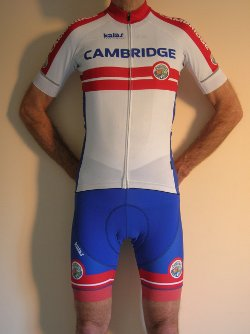
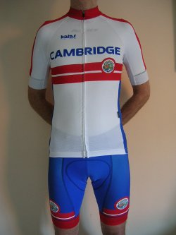
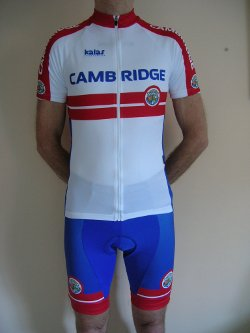
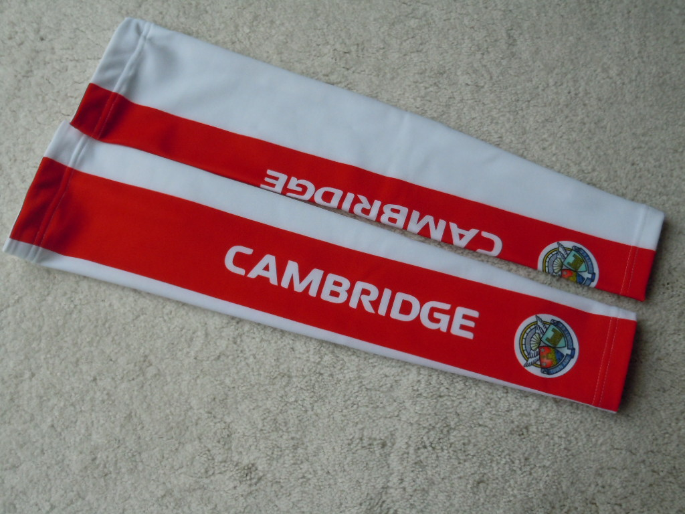
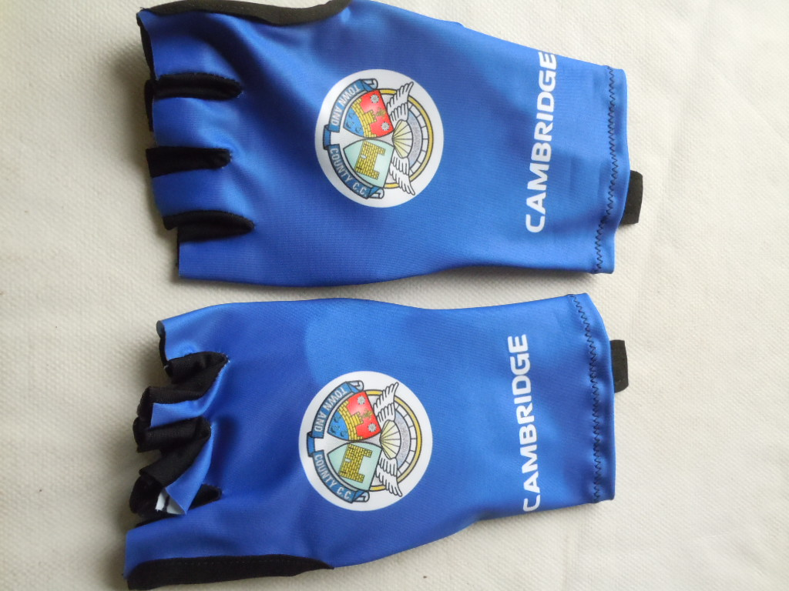
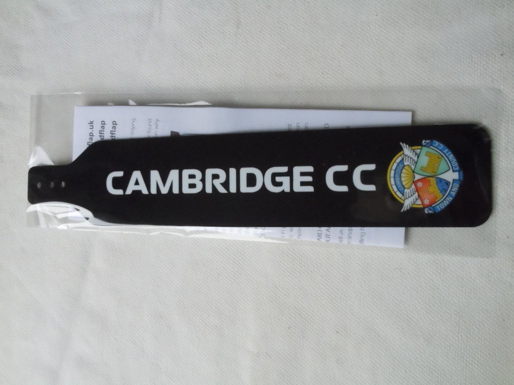

Clothing
Kalas provide our general Club kit and Nopinz our discipline specific racing kit
Kalas

Pro

Elite

Active
We do not hold stock* for immediate purchase. Orders are placed with Kalas when we meet the minimum requirement. Having acknowledged our order, the lead time is about five weeks.
Members wishing to order kit will need to choose items from the Product List. Note the separate sections for men and women. There are various bib-shorts with the description "non-printed variant". This design can be viewed on page 2 of the Unofficial Black kit pdf below.
The top level kit is the Pro Collection, followed by the mid range Elite Collection and the entry level Active Collection. Here is the Kalas brochure and sizing guide. When you have finalised your order, copy and paste the relevent product lines into an email and send to the Clothier together with the size and colour of each item. Your mail will be acknowledged with payment instructions. The Clothier will contact members when their kit is ready to be collected.
Members placing orders should be aware of the following: -
Kit that is correctly made but does not fit - The Clothier will try to sell the item on behalf of the member
Other issues - The member will need to resolve directly with Kalas
Note that black kit is unofficial and therefore cannot be worn when representing the Club in a road race.
Official White kit (Note that RAINMEM bottoms need to be black in order to be rain-resistant)
Unofficial Black kit
Unofficial Neon kit
* We do have in stock roubaix arm-warmers £24, summer mitts £19, caps £21 and CCC branded mudflaps £8.



Nopinz
Members place their order directly with Nopinz by accessing their online shop. The order is delivered to the member's home address. The transaction is between the member and Nopinz - the Club is only involved to the extent of providing the access code to the online shop. The access code/password is available from the Clothier.
The price list is available from the download drop down on the Nopinz website.